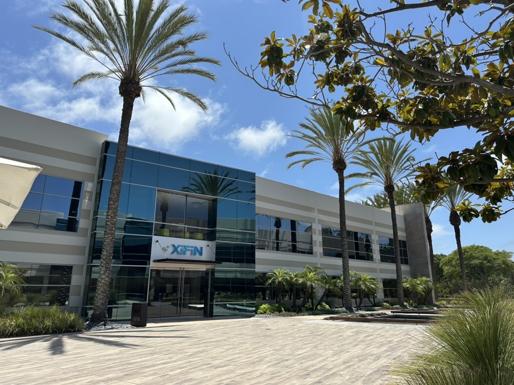
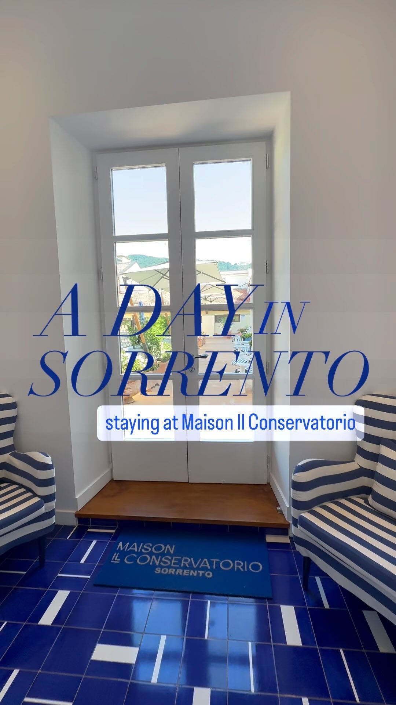
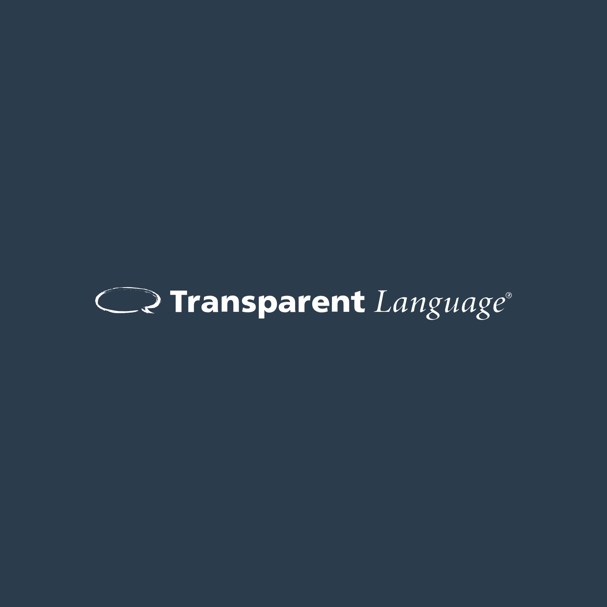

Experience
Strategic Digital Growth • Global Event Operations • Brand Storytelling
I specialize in bridging the gap between creative storytelling and operational precision. From scaling digital reach for a global health-tech firm to managing luxury brand identity in Italy, I deliver measurable results through high-velocity strategy and polished execution.

NowHealthcare technology2 roles at XiFinAssociate Marketing Communications Manager
February 2026 – present
PreviouslyMarketing Communications CoordinatorDecember 2024 – February 2026
XiFin, Inc.
San Diego, CA · 2024–present
See work samples Higher education
Higher educationStudent Social Media Content Creator
University of Massachusetts Amherst
Amherst, MA · 2023–2024
See work samples
Luxury hospitalityCommunications and Media Management Intern
Maison Il Conservatorio
Sorrento, Italy · 2023
See work samples
Language-learning technologyCurriculum Media Specialist
Transparent Language
Nashua, NH · 2022
See the role